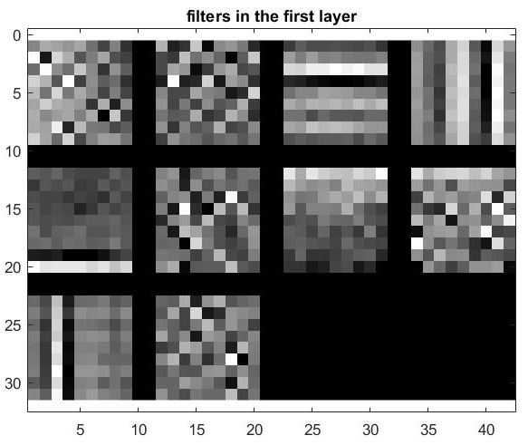
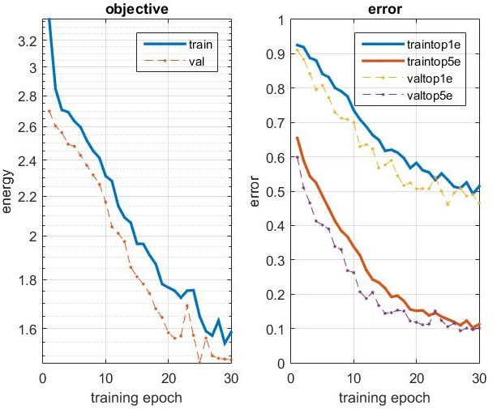
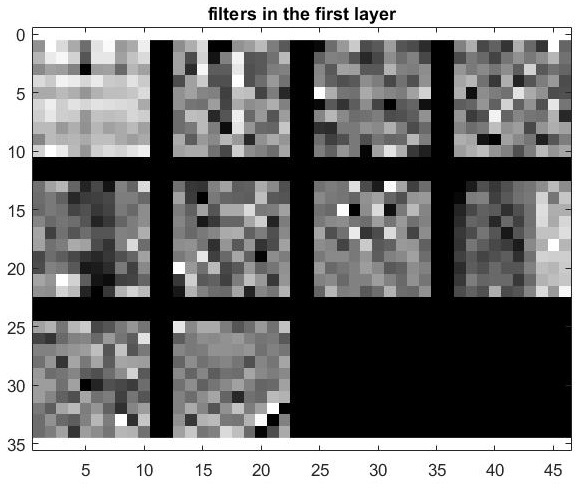
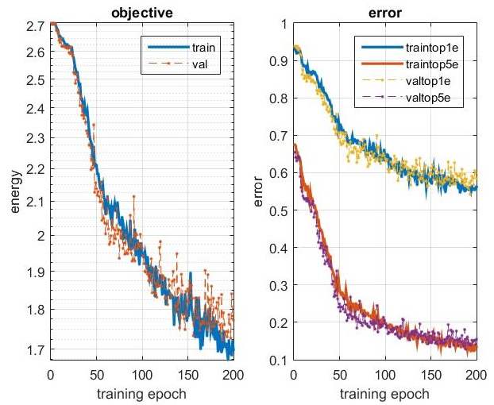
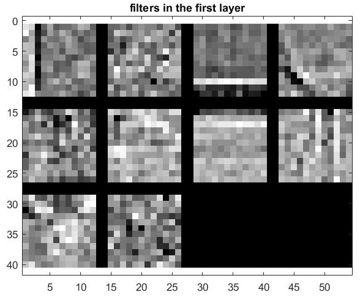
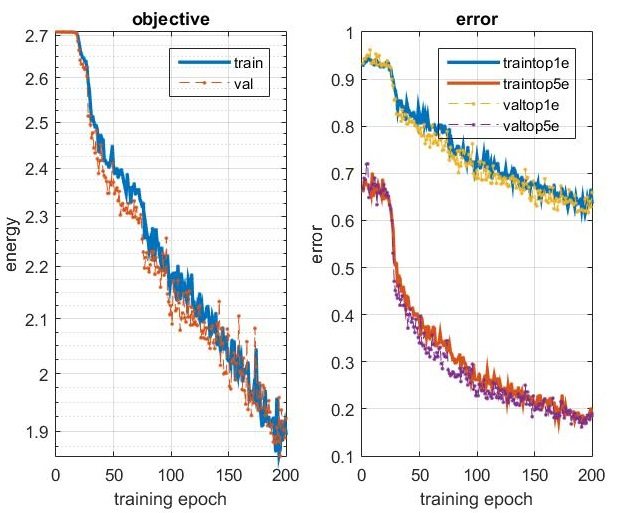

This project aims to learn the classifications of the images by buidling a network. There there several modification I made on the starter code to achieve the goal accuracy.
According to the instructions, I mirror half of the training images so that I can have 50% images for training.
numOfImg = size(im, 4);
for ii = 1 : numOfImg
if (rand() < 0.5)
im(:, :, :, ii) = fliplr(im(:, :, :, ii));
end
end
According to the instructions, I subtract the mean of the pixel values from each pixel to achieve the zero center(normalization).
cur_image = imresize(cur_image, image_size);
cur_image = cur_image - mean(mean(cur_image));
According to the instructions, I add a dropout layer for regularization.
net.layers{end+1} = struct('type', 'dropout', 'rate', 0.5) ;
By adding more convolutional layers and max-pool layers and adjusting the learning rate and number of Epochs properly, I construct a deeper network. The comparasion between the results of the shallow network and the deeper network is shown below.
% Deeper Network
net.layers{end+1} = struct('type', 'conv', ...
'weights', {{f*randn(10,10,1,10, 'single'), zeros(1, 10, 'single')}}, ...
'stride', 1, ...
'pad', 0, ...
'name', 'conv1') ;
net.layers{end+1} = struct('type', 'pool', ...
'method', 'max', ...
'pool', [5 5], ...
'stride', 2, ...
'pad', 0) ;
net.layers{end+1} = struct('type', 'relu') ;
net.layers{end+1} = struct('type', 'conv', ...
'weights', {{f*randn(5,5,1,10, 'single'), zeros(1, 10, 'single')}}, ...
'stride', 1, ...
'pad', 0, ...
'name', 'conv1') ;
net.layers{end+1} = struct('type', 'pool', ...
'method', 'max', ...
'pool', [3 3], ...
'stride', 2, ...
'pad', 0) ;
net.layers{end+1} = struct('type', 'relu') ;
net.layers{end+1} = struct('type', 'conv', ...
'weights', {{f*randn(3,3,1,10, 'single'), zeros(1, 10, 'single')}}, ...
'stride', 1, ...
'pad', 0, ...
'name', 'conv1') ;
net.layers{end+1} = struct('type', 'pool', ...
'method', 'max', ...
'pool', [2 2], ...
'stride', 2, ...
'pad', 0) ;
net.layers{end+1} = struct('type', 'relu') ;
net.layers{end+1} = struct('type', 'dropout', 'rate', 0.5) ;
net.layers{end+1} = struct('type', 'conv', ...
'weights', {{f*randn(4,4,10,15, 'single'), zeros(1, 15, 'single')}}, ...
'stride', 1, ...
'pad', 0, ...
'name', 'fc1') ;
| Settings and Accuracy | Filter Visualization | Learning Curve Plot |
| 0. Learning Rate: 0.0001; Number of Epoch: 50 1. 1st conv layer with 10 (9*9) filters, stride 1. 2. 1st maxpooling layer with 10 (7*7) filters, stride 7. 3. fc layer with 15 (8*8) filters, stride 1. Lowest Error Rate: 0.461 |  |  |
| 0. Learning Rate: 0.001; Number of Epoch: 200 1. 1st conv layer with 10 (10*10) filters, stride 1. 2. 1st maxpooling layer with 10 (5*5) filters, stride 2. 3. 2nd conv layer with 10 (5*5) filters, stride 1. 4. 2nd maxpooling layer with 10 (3*3) filters, stride 2. 5. 3rd conv layer with 10 (3*3) filters, stride 1. 6. 3rd maxpooling layer with 10 (2*2) filters, stride 2. 7. fc layer with 15 (4*4) filters, stride 1. Lowest Error Rate: 0.542 |  |  |
| 0. Learning Rate: 0.001; Number of Epoch: 200 1. 1st conv layer with 10 (12*12) filters, stride 1. 2. 1st maxpooling layer with 10 (6*6) filters, stride 2. 3. 2nd conv layer with 10 (6*6) filters, stride 1. 4. 2nd maxpooling layer with 10 (3*3) filters, stride 2. 5. 3rd conv layer with 10 (3*3) filters, stride 1. 6. 3rd maxpooling layer with 10 (2*2) filters, stride 2. 7. fc layer with 14 (3*3) filters, stride 1. Lowest Error Rate: 0.612 |  |  |
The learning result of the deeper network is not good as the reulst fo the shallow network. The reason might be that the number of epoch is not big enough for reaching the best learning result, or it might be related to the learning rate since the learning curve becomes flat when as the number of iterations grows. If a dynamic learning rate can be applied on the learning process, the learning curve may converge more quickly and reach the better result.